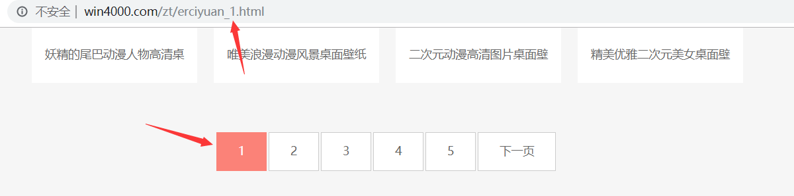
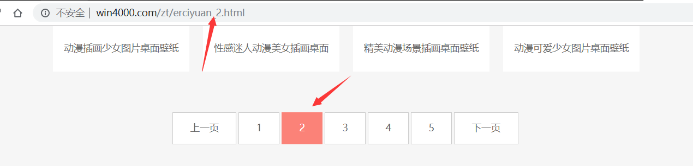
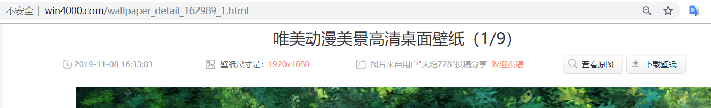
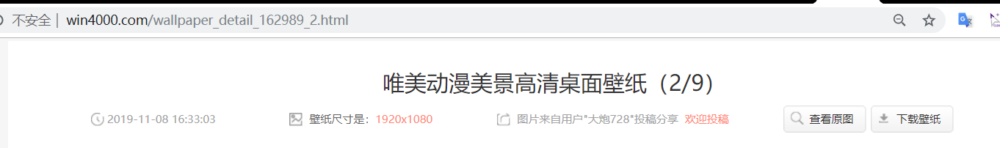
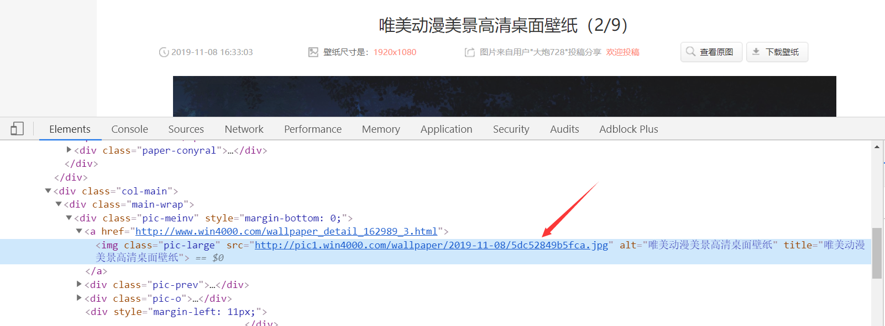

一. 前言
我在建立bolg的时候，就一直想美化一下界面，然后我也没有什么图片存货，从手机转移到电脑上挺麻烦。然后我在上网搜的时候，意外发现一个挺好用的网站，里面的图片质量还行，我就爬取一下，以后就当作我的备用图片库了。
二. 具体步骤
1. 网页分析
1.1
首先打开美桌的 链接 ，发现在翻动页面的时候，网页链接会有变化。


虽然一共只有5页，但是每页都有很多的其他的动漫分类。如果全都爬取也会有相当多的图片了。
2.2
我们随便打开一个分类，发现图片的下一张也是可以在链接上找到规律的。


那么我们现在只需要找到图片的下载地址就行了。
2.3
右键单击页面，点击检查按钮，然后发现有一个下载地址。你会发现图片本身和原图的下载地址是一样的，做网页的人偷懒啊，还加了一个查看原图的按钮。

那么现在的思路就出来了，就只要遍历所有的网页，然后保存网页，这种机械方式。不就可以完成图片的爬取了。
2. 代码实现
只需要耐心寻找页面标签，然后以二进制流的形式保存下来，就可以完成目的。
import requests
from bs4 import BeautifulSoup
import time
def geturl(url):
r=requests.get(url)
soup=BeautifulSoup(r.text,'lxml')
image_url=soup.find_all('ul',class_='clearfix')
target_url=image_url[1].find_all('a',target='_blank')
return target_url
def getcontent(url,index):
for i in range(1,10):
temp_url=url.replace('.html','_{}.html'.format(i))
r=requests.get(temp_url)
soup=BeautifulSoup(r.text,'lxml')
image=soup.find_all(class_='pic-large')
for ima in image:
html=requests.get(ima['src'])
index=index+1
ima_name='E:/spider/image/'+str(index)+'.png'
with open(ima_name,'wb') as f:
f.write(html.content)
f.flush()
f.close()
print("已下载{}张图片".format(index))
time.sleep(0.5)
if __name__ == "__main__":
tmp_url = "http://www.win4000.com/zt/erciyuan_{}.html"
index=1
for i in range(1,6):
url=tmp_url.format(i)
x=geturl(url)
for x_url in x:
getcontent(x_url.get("href"),index)
index=index+9